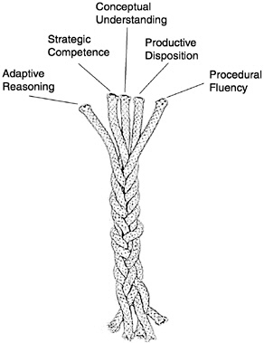

Etceteras¶
Este parte do livro ainda está em construção
Cinco habilidadee para proficiência¶
Este foi um estudo importante feito por uma comissão da presidência dos EUA. Ela olha no que é necessário que os estudantes sejam proficientes em matemática.
Entretanto, é surpreendente absolutamente preciso para o que necessitamos de proficiência em Ciência da Computação, ou mesmo proficiência em tocar Jazz!
Fluência procedural (procedural fluency): Aprenda a sintaxe. Aprenda o tipo. Aprenda o seu caminho entre as suas ferramentas.
Entendimento conceitual (conceptual understandig): entenda a razão das partes se encaixarem como elas se encaixam.
Competência estratégica (strategic competence): Você consegue ver o próximo passo? Você pode formular esse problema na sua notação? Você pode conduzir a música para onde você deseja?
Raciocínio adaptativo (adaptive reasoning): Você consegue ver como mudar o que você aprendeu para resolver esse novo problema?
- Disposição produtiva (productive disposition) Precisamos daquela atitude Conseguimos fazer! !
- Você habitualmente pensa que vale a pena estudar essas coisas.
- Você é constante e disciplinado o suficiente para quebrar em pedaços esse conhecimento novo, e colocar em sua horas de prática.
- Você desenvolveu um senso de eficiência — que você pode fazer as coisas acontecerem!
Verifique http://mason.gmu.edu/~jsuh4/teaching/strands.htm ou o livro de Kilpatrick em http://www.nap.edu/openbook.php?isbn=0309069955
Enviando email¶
Algumas vezes é divertido fazer coisas poderosas com Python — lembre-se daquela parte sobre “disposição produtiva” nos vimos que entre as cinco trilhas de proficiência havia eficiência — o senso de ser capaz de fazer algo útil. Aqui esta um exemplo de como você pode enviar emails para alguém usando Python.
1 2 3 4 5 6 7 8 9 10 11 12 13 14 15 16 17 18 19 20 21 22 23 24 25 26 27 28 | import smtplib, email.mime.text
eu = 'joao@my.org.com' # coloque o seu email aqui
amigo = 'amigo@his.org.com' # e o email do seu amigo aqui
your_mail_server = 'mail.my.org.com' # Pergunte ao admin do sistema
# Crie um texto contendo o corpo de um email.
# Você pode lera esse texto de um arquivo.
msg = email.mime.text.MIMEText("""Oi Amigo,
Estarei dando uma festa, por favor venha as 20h.
Traga um pizza e umas bebidas.
Joao""" )
msg['From'] = eu # acrescente um cabeçalho a mensagem
msg['To'] = amigo
msg['Subject'] = 'Festa no sabado 21/mar'
# crie uma conexao com o seu servidor de email
svr = smtplib.SMTP(your_mail_server)
response = svr.sendmail(eu, amigo, msg.as_string()) # envie a mensagem
if response != {}:
print("Envio falhou por ", response)
else:
print("Mensagem enviada.")
svr.quit() # feche a conexao
|
No contexto desta disciplina, note como usamos os dois objetos nesse programa: nós criamos um objeto mensagem na linha 9 e definimos alguns atributos nas linha 16-18. Nós então criamos um objeto conexão na linha 23 e pedidos que ele envie nossa mensagem.